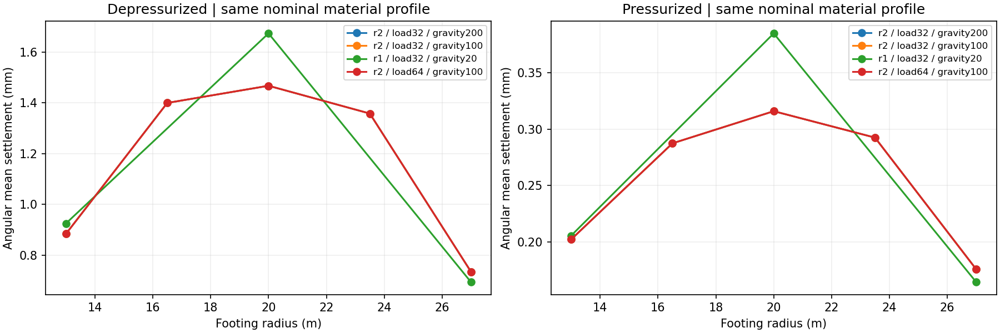

2026년11월25일 · 완료 9 / 실행 19 · 기본 프로필 nl_ss_block35 · research_only_localization_and_mesh_verification_unresolved
모든 조합은90×90×30 m, 링 중심 반경20 m·바닥 폭14 m·굴착3 m,24개 원주 분할을 사용했다. 다각형 재하 면적1739.264 m², 감압 하향하중150.3 MN, 가압 후 순압축29.58 MN이다. 층 경계는0.2·3·13 m이며 모든 층이3D DruckerPrager 탄소성이다. 재하 면적과 하중은 메시 비교에서도 유지한다. 링 밑면은3 m 깊이의 암괴층 경계에 있고 접촉응력86.4·17.0 kPa는 이 밑면에 작용한다.
침하는 굴착된 지반의 자중 평형 이후 증분이다. 가압 단계는 내압에 의한 들림만큼 하중을 줄인 상태이며 하중이0인 잔류침하 시험은 아니다. 수직 등가 재하 해석으로, 링–지반 접촉/분리·인발과 구조물 설계 판정은 포함하지 않는다.
| 실행 | 요소 | 재하 증분 | 감압 최대(mm) | 가압 최대(mm) | 힘 평형 상대오차 |
|---|---|---|---|---|---|
| gravity200_r2/nl_ss_block35_r2 | 3504 | 32 | 1.466977 | 0.315912 | 4.41e-15 |
| refined_gravity100/nl_ss_block30_r2 | 3504 | 32 | 1.595419 | 0.444242 | 4.19e-15 |
| refined_gravity100/nl_ss_block35_r2 | 3504 | 32 | 1.466977 | 0.315912 | 5.07e-15 |
| refined_phi40/nl_ss_block40_r2 | 3504 | 32 | 1.435542 | 0.284466 | 3.97e-15 |
| retry32/nl_ss_block35_r1 | 1968 | 32 | 1.675959 | 0.386757 | 7.01e-16 |
| screening/nl_mgs1s_block35_r1 | 1968 | 8 | 1.675497 | 0.386297 | 6.62e-16 |
| screening/nl_ss_block30_r1 | 1968 | 8 | 1.893579 | 0.604539 | 6.62e-16 |
| screening/nl_ss_block40_r1 | 1968 | 8 | 1.604373 | 0.315281 | 6.62e-16 |
| step64/nl_ss_block35_r2 | 3504 | 64 | 1.466954 | 0.315889 | 3.97e-15 |
자료와 대응하는 시험 경로를 우선하면 경화층의 기울기 추정 DP, 모래의 MGS1 또는 MGS1S 단순전단 대응 DP, 암괴층의 마찰 범위 비교군, 현무암의 GSI55 압축 대응 DP가 기준 후보군이다. 암괴 마찰각·점착력과 암반 GSI는 현장 보정값이 없어 하나의 실제 최적 조합을 확정할 수 없다.
같은 기준 메시(r2)·자중100증분·재하32증분으로 완료한 비교 조합 중 감압 침하가 가장 작았던 것은 nl_ss_block40의1.4355 mm다. 이 값은 해당 가정에서의 응답 순위이며, 강도를 높여 얻은 작은 침하를 재료의 타당성 순위로 사용하지 않았다.
연구용 기준 조합은 경화층DP + MGS1 단순전단 대응DP + 암괴층 무점착 φ35°DP + 현무암 GSI55 압축 대응DP다. 동일 기준 메시에서 최소 감압 침하는 암괴층φ40° 조합의1.4355mm였다. 항복면 근처 모래의 조건부 국부화 가능성과 세분 메시 미완료가 남아 최종 설계용 최적 조합으로 확정하지 않았다. 재하32→64증분과 자중100→200증분 비교는 기준 메시에서 통과했다.
추가 접선 안정성 진단에서 기준 지반의 항복면 근처 모래 일부 점에 국부화 가능성이 확인되었다. 이는 소성 재하 접선을 가정한 조건부 진단으로 전역 붕괴 판정은 아니다. 구성식·평형 검증 통과와 최종 재료 채택을 구분해야 한다. 접선 검증과 음향 텐서 진단
기존 하부 두 층이 탄성인 조합은 감압1.433760 mm·가압0.282703 mm였다. 전체 이전값 비교에는 메시가 같은지도 기록했다. 다른 메시 결과의 차이를 재료만의 효과로 해석하지 않는다.

| 비교 A | 비교 B | 감압 최대 변화(%) | 가압 최대 변화(%) |
|---|---|---|---|
| gravity200_r2/nl_ss_block35_r2 | refined_gravity100/nl_ss_block35_r2 | -0.0000 | -0.0000 |
| gravity200_r2/nl_ss_block35_r2 | retry32/nl_ss_block35_r1 | 14.2457 | 22.4256 |
| gravity200_r2/nl_ss_block35_r2 | step64/nl_ss_block35_r2 | -0.0016 | -0.0073 |
| refined_gravity100/nl_ss_block30_r2 | screening/nl_ss_block30_r1 | 18.6885 | 36.0833 |
| refined_gravity100/nl_ss_block35_r2 | retry32/nl_ss_block35_r1 | 14.2457 | 22.4257 |
| refined_gravity100/nl_ss_block35_r2 | step64/nl_ss_block35_r2 | -0.0016 | -0.0073 |
| refined_phi40/nl_ss_block40_r2 | screening/nl_ss_block40_r1 | 11.7608 | 10.8325 |
| retry32/nl_ss_block35_r1 | step64/nl_ss_block35_r2 | -12.4707 | -18.3237 |
연구용 목표는 메시·증분 변경에 따른 침하 차이5% 이하다. 위 그래프는 같은 반경의 각도 평균이며 최대 절점 침하와 다르다. 알고리즘이나 자중 증분도 달라졌다면 결합된 수치 민감도이며 메시 수렴만으로 부르지 않는다. 비선형 경로 의존성과 마지막 작은 증분의 수렴을 별도로 확인한다.
| 실행·단계 | 재료 | 소성 적분점/전체 | 최소 주압축(kPa) | 최대 주압축(kPa) | HB 범위 밖 |
|---|---|---|---|---|---|
| gravity200_r2/nl_ss_block35_r2 / depressurized | mars_nl25_basalt_hb_gsi55 | 0/12960 | 36.234 | 271.005 | 0 |
| gravity200_r2/nl_ss_block35_r2 / depressurized | mars_nl25_blocky_phi35 | 2268/7776 | 3.683 | 130.852 | — |
| gravity200_r2/nl_ss_block35_r2 / depressurized | mars_nl25_crust_tc | 0/1824 | -5.095 | 1.456 | — |
| gravity200_r2/nl_ss_block35_r2 / depressurized | mars_nl25_mgs1_ss | 4740/5472 | -0.139 | 10.047 | — |
| refined_gravity100/nl_ss_block30_r2 / depressurized | mars_nl25_basalt_hb_gsi55 | 0/12960 | 36.472 | 270.137 | 0 |
| refined_gravity100/nl_ss_block30_r2 / depressurized | mars_nl25_blocky_phi30 | 7776/7776 | 5.353 | 128.663 | — |
| refined_gravity100/nl_ss_block30_r2 / depressurized | mars_nl25_crust_tc | 0/1824 | -5.187 | 1.475 | — |
| refined_gravity100/nl_ss_block30_r2 / depressurized | mars_nl25_mgs1_ss | 4748/5472 | -0.140 | 10.011 | — |
| refined_gravity100/nl_ss_block35_r2 / depressurized | mars_nl25_basalt_hb_gsi55 | 0/12960 | 36.234 | 271.005 | 0 |
| refined_gravity100/nl_ss_block35_r2 / depressurized | mars_nl25_blocky_phi35 | 2268/7776 | 3.683 | 130.852 | — |
| refined_gravity100/nl_ss_block35_r2 / depressurized | mars_nl25_crust_tc | 0/1824 | -5.096 | 1.457 | — |
| refined_gravity100/nl_ss_block35_r2 / depressurized | mars_nl25_mgs1_ss | 4740/5472 | -0.139 | 10.046 | — |
| refined_phi40/nl_ss_block40_r2 / depressurized | mars_nl25_basalt_hb_gsi55 | 0/12960 | 36.187 | 271.153 | 0 |
| refined_phi40/nl_ss_block40_r2 / depressurized | mars_nl25_blocky_phi40 | 836/7776 | 2.387 | 130.118 | — |
| refined_phi40/nl_ss_block40_r2 / depressurized | mars_nl25_crust_tc | 0/1824 | -5.054 | 1.448 | — |
| refined_phi40/nl_ss_block40_r2 / depressurized | mars_nl25_mgs1_ss | 4764/5472 | -0.141 | 10.068 | — |
| retry32/nl_ss_block35_r1 / depressurized | mars_nl25_basalt_hb_gsi55 | 0/7200 | 35.619 | 270.274 | 0 |
| retry32/nl_ss_block35_r1 / depressurized | mars_nl25_blocky_phi35 | 1708/4320 | 0.842 | 125.294 | — |
| retry32/nl_ss_block35_r1 / depressurized | mars_nl25_crust_tc | 0/1056 | -2.791 | 0.772 | — |
| retry32/nl_ss_block35_r1 / depressurized | mars_nl25_mgs1_ss | 2804/3168 | -0.021 | 9.950 | — |
| screening/nl_mgs1s_block35_r1 / depressurized | mars_nl25_basalt_hb_gsi55 | 0/7200 | 35.613 | 270.281 | 0 |
| screening/nl_mgs1s_block35_r1 / depressurized | mars_nl25_blocky_phi35 | 1716/4320 | 0.860 | 125.338 | — |
| screening/nl_mgs1s_block35_r1 / depressurized | mars_nl25_crust_tc | 0/1056 | -3.146 | 0.843 | — |
| screening/nl_mgs1s_block35_r1 / depressurized | mars_nl25_mgs1s_ss | 2832/3168 | 0.011 | 10.011 | — |
| screening/nl_ss_block30_r1 / depressurized | mars_nl25_basalt_hb_gsi55 | 0/7200 | 35.785 | 269.838 | 0 |
| screening/nl_ss_block30_r1 / depressurized | mars_nl25_blocky_phi30 | 4320/4320 | 1.958 | 122.286 | — |
| screening/nl_ss_block30_r1 / depressurized | mars_nl25_crust_tc | 0/1056 | -2.841 | 0.774 | — |
| screening/nl_ss_block30_r1 / depressurized | mars_nl25_mgs1_ss | 2792/3168 | -0.018 | 9.932 | — |
| screening/nl_ss_block40_r1 / depressurized | mars_nl25_basalt_hb_gsi55 | 0/7200 | 35.604 | 270.424 | 0 |
| screening/nl_ss_block40_r1 / depressurized | mars_nl25_blocky_phi40 | 716/4320 | 0.161 | 125.701 | — |
| screening/nl_ss_block40_r1 / depressurized | mars_nl25_crust_tc | 0/1056 | -2.720 | 0.769 | — |
| screening/nl_ss_block40_r1 / depressurized | mars_nl25_mgs1_ss | 2792/3168 | -0.016 | 9.957 | — |
| step64/nl_ss_block35_r2 / depressurized | mars_nl25_basalt_hb_gsi55 | 0/12960 | 36.234 | 271.004 | 0 |
| step64/nl_ss_block35_r2 / depressurized | mars_nl25_blocky_phi35 | 2268/7776 | 3.681 | 130.849 | — |
| step64/nl_ss_block35_r2 / depressurized | mars_nl25_crust_tc | 0/1824 | -5.099 | 1.458 | — |
| step64/nl_ss_block35_r2 / depressurized | mars_nl25_mgs1_ss | 4740/5472 | -0.138 | 10.046 | — |
DP 상태변수의 소성변형률 노름1e-8 초과를 소성 발생 진단으로 사용했다. 이는 손상률이나 파괴 판정이 아니다. 현무암은 인장 한계를 과대평가하므로 최소 주압축이 양수이고 보정된0–500 kPa의 σ3 범위에 있는지 검사했다. HB 이용률도 지반 전체의 지지력 안전율로 해석하지 않는다.
| 실행 | 모래 최대 수직압축(kPa) | 680 Pa 초과 적분점/전체 |
|---|---|---|
| gravity200_r2/nl_ss_block35_r2 | 10.0084 | 5448/5472 |
| refined_gravity100/nl_ss_block30_r2 | 9.9704 | 5440/5472 |
| refined_gravity100/nl_ss_block35_r2 | 10.0081 | 5448/5472 |
| refined_phi40/nl_ss_block40_r2 | 10.0285 | 5448/5472 |
| retry32/nl_ss_block35_r1 | 9.9244 | 3168/3168 |
| screening/nl_mgs1s_block35_r1 | 9.9889 | 3168/3168 |
| screening/nl_ss_block30_r1 | 9.9153 | 3168/3168 |
| screening/nl_ss_block40_r1 | 9.9328 | 3168/3168 |
| step64/nl_ss_block35_r2 | 10.0082 | 5448/5472 |
모래 포락선의 시험 수직응력은97–680 Pa다. 기준 조합의 모래층 수직압축은 최대 약10 kPa로 이 범위를 초과한다. 기초 밑면의86.4 kPa를 모래층 전체가 받는다고 비교하지 않고 실제 모래 적분점의 수직응력을 따로 검사했다. 이 검사는3D 응력 경로가 직접전단 시험과 같다는 증명은 아니다.
| 실행 | 단계 | 마지막 재하 이전 계수 | 중지 이유 |
|---|---|---|---|
| bonded_sensitivity/nl_ss_bond1k_r2 | gravity | 0.2 | native_attempt_no_return_limit |
| bonded_sensitivity/nl_ss_bond5k_r2 | gravity | 0.2 | native_attempt_no_return_limit |
| gravity200_r3/nl_ss_block35_r3 | gravity | 0.6500000000000005 | native_attempt_no_return_limit |
| mesh_r3/nl_ss_block35_r3 | gravity | 0.5290625000000002 | native_attempt_no_return_limit |
| refinement32/nl_ss_block30_r2 | gravity | 0.2 | native_attempt_no_return_limit |
| refinement32/nl_ss_block40_r2 | gravity | 0.2 | native_attempt_no_return_limit |
| screening/nl_ss_block35_r1 | depressurized | 0.875 | native_attempt_no_return_limit |
| screening/nl_tc_block35_r1 | depressurized | 0.875 | native_attempt_no_return_limit |
| superlu_r2/nl_ss_block35_r2 | gravity | 0.05 | Optional solver comparison ended for prompt wrap-up; not a convergence or physical failure verdict |
| superlu_r3/nl_ss_block35_r3 | gravity | 0.04 | Optional solver comparison ended for prompt wrap-up; not a convergence or physical failure verdict |
수렴하지 않은 실행의 중간 변위를 최종 침하 순위에 넣지 않았다. native attempt timeout은 Python으로 반환되지 않는 OpenSees 호출에 대한 자원 한계이며 물리적인 붕괴 하중이 아니다. 일부 실행의 내부 함수는 추가로1초 샘플링했다. 자중200증분·r3 실행의 정체 시점은 UmfpackGenLinSolver::solve와 umfpack_di_numeric의 행렬 분해에 집중돼 있었다. 프로세스 메모리는약2.0GB, 최대2.5GB였고 CPU사용률은98.5%였다. 이 관측은 해당 시점 한 건에 한정되며 모든 실패 원인이나 재료 적분의 무한루프를 증명하지 않는다. 프로파일 관측 기록 일부 실행은80회 반복 후 큰 불평형과 함께 실패했고, 작은 자중·재하 증분의 별도 실행은 완료되었다.
현재 기본 메시의3,504개 요소·4,093개 절점에서100회 자중 증분과 각32회 이상의 재하·감압을 수행한다. 탄소성 활성점의 변화 때문에 반복 평형과 희소 비대칭 행렬의 풀이를 거듭한다. 시도별 반복 횟수와 실제 소요시간을 저장했다. 재료 강도·강성·허용 잔차를 바꾸지 않고 수치 방법을 비교했다.
독립 원시 강도·변형 곡선과 InSight 암괴층의 c·φ, 암반 GSI가 필요하다. 모래층의 실제 수직응력도97–680 Pa 시험 범위를 넘어 외삽이 남는다. 또한 기초 밑면3 m가 가정한 모래층 끝3 m와 일치하므로 층 경계의 불확실성도 별도 검증해야 한다. 단일요소와 FE 평형 검증을 통과해도 실제 지지력·인발 안전이 검증되었다고 결론내리지 않는다.
시편·논문값 평가 보고서 · 분류한 논문 라이브러리 · 실행 결과 CSV · 모든 적분점 범위 감사 CSV · 전체 판정 JSON